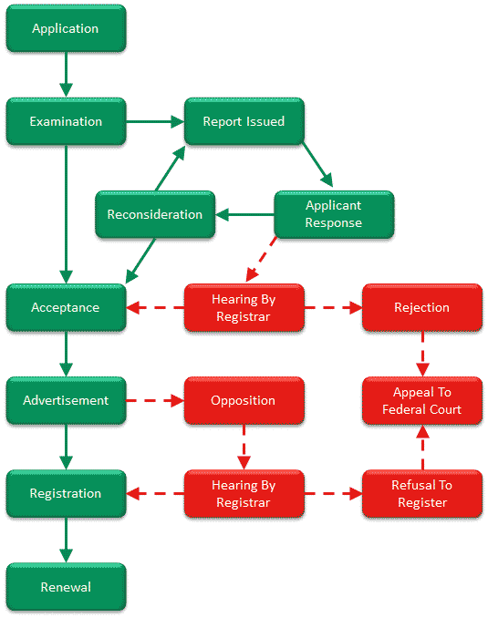
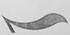
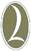
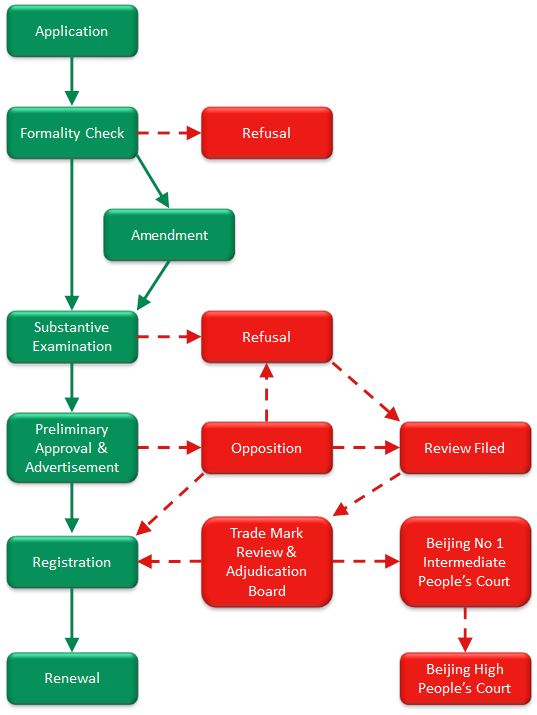
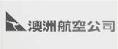

Tips On Trade Mark Protection In Australia
-
In Australia, a trade mark may be a word, name, number, logo, picture, aspect of packaging, shape, colour, scent, sound or a combinations of the those signs, which are used to distinguish goods or services provided by one trader from those of other traders.
Why registration is important?
In Australia, there are two ways to establish your rights to a trade mark:- by using the trade mark
- by registration of the trade mark
Although it is not compulsory to register your trade mark, registration makes it much easier for you to enforce your trade mark rights. The benefits of trade mark registration include:
- Exclusive rights - you can stop and prevent unauthorised use of a trade mark (e.g. copycats). Without registration, you can only stop and prevent unauthorised use if your reputation has been established in the trade mark.
- Nationwide protection – registration gives protection to your trade mark across Australia. Without registration, your rights are generally limited to the areas where you can prove a reputation.
- Valuable asset - a registered trade mark is a valuable asset which can be licensed or sold.
- Cost effective enforcement - once registered, reputation in the trade mark does not have to be established in order to obtain relief from infringement. Proving reputation can often be a difficult and costly exercise.
How to select a registrable trade Mark?
When selecting a trade mark, it is important to choose a mark, which is distinctive and not substantially identical or deceptively similar to existing trade mark(s) (“Conflicting Trade Marks”).Distinctiveness
A registrable trade mark should be capable of distinguishing the applicant’s goods or services from same or similar goods and/or services provided by other traders. Marks regarded as having no inherent ability to distinguish include:- geographical names
- common surnames
- common trade expressions
- descriptive words and phrases
- short combinations of numbers or letters on their own
Examples of trade mark applications, which have been rejected due to lack of distinctiveness:
- TOTALPATENT for on-line interactive databases featuring information relating to the analysis, evaluation and creation of patents in class 45 (2012 ATMO 46) – – expression has been used for the sake of its ordinary meaning by other traders in Australia engaged in similar services
- HARBIN for beer, beer wort, non-alcoholic fruit extracts in class 45 (2012 ATMO 48) ) – – Hairbin is the capital city of Heilongjiang province in China. Other traders should be able to use this term to indicate the origin of their goods.
Conflicting Trade Marks
An application for a trade mark must be rejected if the applicant’s trade mark is substantially identical with or deceptively similar to an existing trade mark (registered or pending) in respect of similar goods or services. Hence, it is recommended to conduct searches for Conflicting Trade Marks prior to applying for registration.
Examples of trade marks that are substantially identically or deceptively similar:
- Red Eagle (composite mark) and Red Hawk (word mark) ([2012] ATMO 7)
- WOSS (word mark) and BOSS (word mark) ([2000] ATMO 88)
Minimum Filing Requirements
- the applicant’s full name and address (including incorporation details if the applicant is an Australian company)
- a clear representation of the trade mark if it contains a device
- the class(es) in which the application is to be filed
- a statement of goods and/or services for which registration is to be sought
- details of convention priority claim (if any)
- an address for service in Australia (if overseas applicant)
- a translation of any part of your mark that is not in English (if any)
Note: Business and trading names cannot own property; therefore, an application should be in the name(s) of the owner(s) of the business name registration or company (if the business is an incorporated entity).
Registration Process
In Australia, the registration process includes- Trade mark search (not mandatory)
- Preparation and lodgement of applications
- Examination
- Application acceptance
- Advertisement for opposition
- Trade mark registration
Trade Mark Search
Although a trade mark search is not mandatory for registration purposes, it can play a major part in reducing your risks and legal costs. A search should be conducted before using your trade mark for marketing and labelling your goods and services. A trade mark clearance search will:- disclose whether your trade mark is available for registration
- identify whether your trade mark will infringe the rights of other traders
- minimise objections being raised during the registration process
- minimise the risk of a trade mark dispute arising later
Preparation and lodgement of applications
Once an application is filed, it is not possible to make substantial changes to the applications (including but not limited to changes to the representation of the trade mark itself, addition of extra classes or addition of extra goods and services). Hence it is recommended that professional advice be sought prior to lodgement of the application. Important decisions you have to make when preparing an application include:- the identity of the applicant;
- the elements of your branding. These may include the name of your business or company; the names of your goods and services; or distinctive elements of your packaging;
- appropriate descriptions of the goods and services you actually trade in or intend to trade in the near future; and
- the class or classes to be included in the registration.
Classification
Australia has adopted the Nice Classification of Goods and Services (“Nice Classification”) (10th Edition, as of 1 January 2012) in the examination of trade mark applications. As there have been changes in the classification of particular goods and services, it is recommended that the initial search to identify potential Conflicting Trade Marks should be across all 45 classes.
Wording of the specification
The specification of the goods and services covered by a trade mark should be clear and unambiguous. Examples of unacceptable specifications:- goods in this class
- services in this class
- parts and fittings not relating to specific goods
Examination
Typically an application will be examined within 3 to 4 months after filing. The examiner from IP Australia will examine each application on its own merits, including formalities and substantive requirements.
If the examiner decides:- your application meets all the requirements, your trade mark will be accepted for registration; or
- your application does not meet all the requirements, an adverse report will be issued.
Some of the most common grounds outlined in an adverse report for rejection are:
- your trade mark does not distinguish your goods and/or services
- your trade mark contains words or phrases that other traders are likely to use
- your trade mark is substantially identical or deceptively similar to another trade mark
You will have 15 months from the date of the examiner’s first report for you to address their concerns. To overcome the objections, the applicant may:
- make submissions in rebuttal
- provide formal evidence of use
- amend the specification of goods and/or services to avoid the grounds for rejection
Acceptance
Once an application has been accepted, a Notice of Advertisement of the Acceptance of the trade mark will be sent to the applicant.Advertisement For Opposition
Once advertised, the trade mark application is open to opposition by any party for 3 months from the date of advertisement. Common reasons for opposition include- the trade mark is not distinctive
- the trade mark is identical or deceptively similar to another registered or pending trade mark
- the trade mark applicant is not the true owner of the trade mark
- the use of the trade mark is likely to cause deception or confusion because of the reputation in another mark
Registration
If no opposition is filed or opposition fails, an application will then proceed to registration upon payment of the registration fees. The registration fee is AU$300 per class.Renewal
A trade mark registration may be renewed every 10 years. The fee for renewal is AU$300 per class.Use of Trade Marks
Once a trade mark is successfully registered, it is important to use the trade mark in the form in which it is registered. To claim your interest in a trade mark, you can use either ™or ® symbols:- ™symbol means that trade mark rights are being claimed in the mark. The mark itself may or may not be registered.
- ®symbol means that the mark is claimed to be a registered trade mark with the Trade Marks Office.
Non-use Removal
To prevent loss of your registered trade mark, you must use it in the course of trade. Any person who is adversely affected in a legal or business sense by the existence of the non-used trade mark may apply for removal of a trade mark for non-use, if:- 5 (five) years has lapsed from the filing date in respect of the registration of the trade mark to be removed; and
- the trade mark has not been used in Australia during the three years immediately preceding the filing of the non-use removal application.
Enforcement of Trade Mark Rights
Once a trade mark is successfully registered, it is important for the owner of the trade mark to actively protect their trade mark rights. The avenues available for a trade mark owner to enforce trade mark rights include:- Customs seizure: Customs provisions under the Trade Marks Act 1995 (Cth) allow Australian Customs to seize goods that infringe trade marks.
- Trade mark infringement litigation.
The detailed registration process including typical steps (green with unbroken lines) is shown below

Copyright © Yike Ma 2012
Tips On Trade Mark Protection In China
-
In China, a trade mark may be words, devices, letters, numbers, three-dimensional signs, colour combinations or a combination of those signs, which are used to distinguish goods or services provided by one trader from those of other traders.
Why registration and early filing is important?
China follows a “first-to-file” rule for obtaining trade mark rights. In other words, the person who files their trade mark application first is entitled to register the trade mark. Although it is technically possible under China’s laws and regulations to enforce your trade mark rights without registration, it can be much less predictable and more costly. The owner of an unregistered trade mark would not have much protection from someone else registering the same trade mark, unless they can prove that:- the unregistered trade mark was well-known in China before the filing of the registration; or
- the filing by someone else was made in bad faith.
Recent examples –
- Apple settled with a manufacturer in China for $60 million to use the mark “iPad” in China after a long and bitter fight.
- Hermes lost its 15 year battle to secure the trademark rights to its Chinese name “Ai Ma Shi”.
How to select a registrable trade mark?
When selecting a trade mark, it is important to choose a mark which does not belong to the collection of prohibited signs (“Prohibited Signs”), is distinctive and is not identical with or similar to existing trade mark(s) (registered and/or pending) (“Conflicting Trade Marks”).Prohibited Signs
Clause 10 of the China Trade Mark Law enumerates signs that may not be used as trade marks. Prohibited signs include but are not limited to those:- identical with or similar to the national flag, national emblem or the military flag of the People’s Republic of China;
- identical with or similar to the national flag, national emblem or the military flag of a foreign country;
- identical with or similar to the name, flag or emblem of an international intergovernmental organization;
- identical with or similar to the name or symbol of the Red Cross or the Red Crescent;
- having the nature of exaggeration or fraud in advertising goods;
- detrimental to socialist morality or customs, or having other unhealthy influences.
Distinctiveness
A registrable trade mark should be capable of distinguishing the applicant’s goods and/or services from the same or similar goods and/or services provided by other traders. Marks having no inherent ability to distinguish include:- signs which consist exclusively of a generic name, design or model of the goods;
- signs which consist exclusively of direct indications of the quality, primary raw material, functions, intended purposes, weight, quantity or other characteristics of the goods; or
- signs which are devoid of any distinctive character.
Examples of trade mark applications, which have been rejected due to lack of distinctiveness, include:
- R8 for cars in class 12 filed by Audi AG (2010 China Trademark Review and Adjudication Board 05848) – R8 consists exclusively of the model of the goods and thus lacks distinctiveness.
- the Fanta bottle shape as a 3D mark in class 32 filed by the Coca-Cola Company (2010 China Trade Mark Review and Adjudication 05155) – the shape featured veins densely surrounding the lower part of the bottle which is commonly adopted in many bottles for anti-slipping purposes and is thus incapable of distinguishing the applicant’s products.
Conflicting Trade Marks
An application for a trade mark must be rejected if the applicant’s trade mark is identical with or similar to an existing trade mark (registered and/or pending) in respect of the same and/or similar goods or services. Hence, it is highly recommended to conduct searches for Conflicting Trade Marks prior to applying for registration.
Examples of trade marks that are identical or similar:
-  (device mark) and  (device mark)
- HONYO (word mark) and HONDA (word mark)
Minimum Filing Requirements
- the applicant’s full name and address in both English and Chinese (a copy of the applicant’s certificate of incorporation if the applicant is a company)
- a clear representation of the trade mark
- the class(es) in which the application is to be filed
- a statement of goods and/or services for which registration is to be sought
- details of convention priority claim (if any)
- an address for service in China (if overseas applicant)
- a translation of any part of your mark that is not in Chinese (if any)
- power of attorney duly signed
- application form duly signed
Registration Process
In China, the registration process includes- Trade mark search
- Preparation and lodgement of applications
- Formality Check
- Substantive Examination
- Preliminarily Approval and Advertisement for Opposition
- Application Approved for Registration
Trade Mark Search
Although a trade mark search is not mandatory for registration purposes, it is crucial to reducing your risks and legal costs. A search should be conducted before using your trade mark for marketing and labelling your goods and services. A trade mark clearance search will:- disclose whether your trade mark is available for registration
- identify whether your trade mark will infringe the rights of other traders
- minimise objections being raised during the registration process
- minimise the risk of a trade mark dispute arising later
Preparation and lodgement of applications
Once an application is filed, it is not possible to make substantial changes to the applications (such as changes to the representation of the trade mark or addition of extra classes or goods and services). Hence, it is recommended that professional advice be sought prior to lodgement of the application. Important decisions you have to make when preparing an application include:- the identity of the applicant;
- the critical elements of your branding. These may include the name of your business or company; the names of your goods and services; or distinctive elements of your packaging;
- appropriate descriptions of the goods and services you trade or intend to trade in the near future; and
- the class or classes to be included in the registration.
Classification
Although China has adopted the Nice Classification of Goods and Services (“Nice Classification”) (10th Edition, as of 1 January 2012) in the examination of trade mark applications, the Chinese Trade Marks Office (“CTMO”) has created its own unique “Book of Classification of Similar Goods and Services” (“Book of Classification”) for Chinese examiners’ reference. In accordance with the Book of Classification, each class as per the Nice Classification has been sub-divided into sub-classes. Goods that belong to different sub-classes (even in the same class) are not deemed to be similar and/or closely related goods for examination purposes. For example, clothing under sub-class 2501 is not deemed similar to footwear under sub-class 2507 or headgear under sub-class 2508. Hence, identical or similar marks covering goods in different sub-classes can coexist in the register.
It is strongly recommended that applicants refer to the Book of Classification when specifying the goods covered by the trade mark to ensure adequate protection of the mark. For example, class 25 “clothing, footwear and headgear” as per the Nice Classification has been sub-classified into 13 sub-classes as follows:- clothing (2501)
- textiles for babies (2502)
- specialty sports apparel (2503)
- waterproof clothing (2504)
- costumes (2505)
- shoes for special purpose (2506)
- shoes (2507)
- hats (2508)
- socks (2509)
- gloves (2510)
- ties, scarfs, mantillas and veils (2511)
- girdles and belts (clothing) (2512)
- single product (2513)
For each sub-class, there are various descriptions of goods. These descriptions are used to specify goods in an application. Class or sub-class headings cannot be used to describe goods, unless the words coincide with words used in the various descriptions of the goods.
A common mistake in respect of the scope of coverage of specifications is that some specifications are not as broad as they sound for registration purposes. For example, “clothing” sounds generic and applicants may believe it covers all the goods under class 25. However this is not true according to the Book of Classification. Clothing only covers goods specified in sub-class 2501, goods such as raincoats, gloves and socks are considered different goods. Therefore, if one registers a trade mark for clothing, that mark cannot prevent other applicants registering exactly the same mark for goods such as raincoats and gloves.
The basic government fee of RMB1,000 (approximately AU$17) allows specification of up to 10 items of goods and/or services in each application. It is recommended that at least one item from each sub-class should be included in the application.
Wording of the specification
The specification of the goods and services covered by a trade mark should be clear and unambiguous. It is recommended to use the specification set out in the Book of Classification.Formality Check
Once the application has been lodged, an examiner will check whether the application meets the basic filing requirements including:- whether the application form has been filled in correctly
- whether the representation of the trade mark is clear
- whether the description of goods and/ services belongs to the correct class
Typically the formality check takes up to 6 weeks from the date of lodgement. If the examiner decides:
- the application meets the filing requirements, then a notice of filing will be issued;
- the application meets only some of the requirements, then a notice of amendment will be issued and the applicant will be given 30 days to amend the application and provide the required documents; or
- the application does not meet the requirements, then a notice of refusal of filing will be issued.
Substantive Examination
During the substantive examination, the examiner will examine each application on its own merits, including whether:- the trade mark is a prohibited sign in China;
- the trade mark is capable of distinguishing the applicant’s goods and/or services;
- the trade mark is identical with or similar to Conflicting Trade Marks.
If the examiner decides:
- your application meets all the requirements then your trade mark will be published at the Trade Mark Gazette;
- your application does not meet all the requirements, the CTMO will reject the application or partially reject the application.
Typically the substantive examination will be completed within 12 months from the date of lodgement of application. If the applicant does not agree with the CTMO’s decision to reject or partially reject the application, the applicant can file a request with the Trade Mark Review and Adjudication Board (“TRAB”) to review the CTMO’s decision. Upon receipt of the decision made by TRAB, the applicant can, within thirty days from receipt of the decision, launch a lawsuit against the decision made by TRAB before Beijing No.1 Intermediate People’s Court. Further appeal can be filed with Beijing High People’s Court.
Preliminary Approval
Once an application has been preliminary approved, your trade mark will be advertised for opposition at the Trade Mark Gazette for three months.Opposition
Once advertised, the trade mark application is open to opposition by any party for 3 months from the date of advertisement. Common reasons for opposition include:- the trade mark is not distinctive;
- the trade mark is identical or deceptively similar to another registered or pending trade mark; or
- the use of the trade mark is likely to cause deception or confusion because of the reputation in another mark.
Registration
If no opposition is filed or opposition fails, an application will then proceed to registration. No additional government fees will be charged for issuing the certificate of registration.Renewal
A trade mark registration may be renewed every 10 years. The fee for renewal is RMB2,000 (approx. AU$340) per class.Use of Trade Marks
Once a trade mark is successfully registered, it is important to use the trade mark in the form in which it is registered. To claim your interest in a trade mark, you can use either ™or ® symbols:- ™symbol means that trade mark rights are being claimed in the mark. The mark may or may not be registered.
- ®symbol means that the mark is claimed to be a registered trade mark with the CTMO.
Non-use Removal
To prevent loss of your registered trade mark, you must use it in the course of trade. Any person may apply for removal of a trade mark for non-use if:- the trade mark has not been used in China during the three years immediately preceding the filing of the non-use removal application.
The Supreme People’s Court of China (SPC) has given guidance on what constitutes use of a registered trade mark. According to this guidance, a use of a trade mark in a “slightly different” form from the one in which it is registered is regarded as use provided there has been no substantial alteration to the distinctive features of the registered trade mark. Therefore, use of a stylised version of a plain word mark might potentially be sufficient to preserve the validity of a stylised version of the same mark (and vice versa) depending on the degree of stylisation. However, a precise rule is missing in the case law and the SPC guidance, so this cannot be relied on as a rule of thumb.
Enforcement of Trade Mark Rights
Once a trade mark is successfully registered, it is important for the owner of the trade mark to actively protect their trade mark rights. The avenues available for a trade mark owner to enforce trade mark rights include:- Customs seizure: provisions under the Regulations of the People’s Republic of China on Customs Protection of Intellectual Property Rights allow Chinese Customs to detain goods that are suspected of infringing trade marks; and
- Trade mark infringement litigation.
The detailed registration process in China including typical steps (green with unbroken lines) is shown below

Copyright © Yike Ma 2012
Six Common Mistakes Brand Owners Make In China
-
Although the Chinese government has improved its intellectual property system, China still has a bad reputation for protecting intellectual property rights, particularly trademark rights. A common story amongst western entrepreneurs is of a western company having its trademarks infringed upon in China and consequently learning its lessons the hard way. The Chinese market is the world’s biggest consumer market and thus the opportunities are enormous if the right approach is taken. The protection of trademarks is not as bad as it may seem. There are precautions brand owners can take to protect their brand and to make infringement less likely to occur. One can take measures to stop another company or person stealing your trade mark.
Below is a list of common and avoidable mistakes when registering and using trade marks in China:- not aware of the “first-to-file” system
- not aware of trademark squatters
- not getting enough protection because of China’s unique system of sub-classification
- failure to register a trade mark in Chinese
- not familiar with what can be registered as a trade mark
- failure to file an assignment agreement with the China Trademark Office (“CTMO”)
No.1 Mistake – Not Aware Of The “First-To-File” System
The most commonly used system around the world is the “first-to-use” system. Under this system the first person to use a trademark will generally have more rights to the mark than an applicant who files an application for the same mark at a later date. China uses a different system, the “first-to-file” rule, which means the first person to file a trademark application will generally have priority over an earlier user of the mark. Article 3 of the Trademark Law of the People’s Republic of China (“TML”) states “Registered trademarks refer to trademarks that are registered with the approval of the Trademark Office” and “The owner of a registered trademark shall enjoy the exclusive right to the use of the trademark, which shall be protected by law.” Article 4 of the TML states “Any natural person, legal person, or other organization that needs to acquire the exclusive right to the use of a trademark for the goods he produces, manufactures, processes, selects, or markets shall file an application for registration of the trademark of the goods with the Trademark Office.”
Hence a company with a recognized trademark in Australia may infringe on the same trademark in China when entering the Chinese market if another company has registered the same trademark with the CTMO. This also means that the other company, who has registered your trademark, can stop you using that mark in China.
As a member of the Paris Convention, China has to protect “well-known” trade marks, even if they are not registered. However, the threshold for being “well-known” is high; in the majority of cases owners fail to prove that the disputed trademark has obtained sufficient recognition within the relevant markets in China even though the mark is well-known outside of China.
Article 13 of the TML states “Where the trademark of an identical or similar kind of goods is a reproduction, imitation, or translation of another person's well-known trademark not registered in China and is liable to cause public confusion, no application for its registration may be granted and its use shall be prohibited. Where the trademark of a different or dissimilar kind of goods is a reproduction, imitation, or translation of another person's well-known trademark not registered in China and it misleads the public so that the interests of the owner of the registered well known trademark are likely to be impaired, no application for its registration may be granted and its use shall be prohibited.” Article 14 of the TML states “The following factors shall be considered in determining whether or not a trademark is a well-known one: (1)the degree of public recognition in its trading areas; (2)the duration in which it has been in use; (3)the duration and extent of its advertising, and the geographical areas the advertising has covered; (4)the records of protection it has gained as well-known trademark; and (5)other factors serving to make it well known.”
In practice, to seek protection of a trademark under articles 13 and 14 of the TML, the owner has to prove that the trademark:- is well-known in the country of origin;
- is well-known internationally; and
- is well-known in China prior to the filing date of the identical or similar trademark with the CTMO
Large companies who have learned hard lesson in their trademark battle in China include:
- Hermès (the Chinese version of Hermès, “爱玛仕” ( pronounced as “Ai Ma Shi”))
- Pfizer (the Chinese version of Viagra, “伟哥” (pronounced as “ Wei Ge”)
- Chivas Brother (Chivas Regal in class 25)
- Adidas (“Y-3” vs “Y3”)
Tips: It is highly advisable to apply to register your trademark as early as possible, and preferably well before you enter the Chinese market. Your failure to file early not only leaves the door open to other parties to file before you do but also increases the possibility that your products may be excluded from entry to the Chinese market because of pre-existing registrations by other parties. Once this happens the remaining options include:
- pay money to buy your own mark, which can be frustrating
- launch litigation against the other party to fight for your rights, which can end up being a long-term battle with unpredictable results
- rebrand your products, which can be costly
No.2 Mistake – Not Aware Of Trade Mark Squatters
According to the official report by CTMO and Trademark Review & Adjudication Board (“TRAB”), in 2011, 1,416,785 trademark applications were filed in China; and in that year there were approximately 6,651,000 valid registered trademarks in China. That is approximately three times more than in USA, the runner-up. Although it is unclear how many recent Chinese applications were for established Western brands, trademark squatting is high on the list of problems faced by foreign companies who are in or want to enter the Chinese market. Large companies who suffer from trademark squatting in China include:- Dixons – a Chinese company has registered “Dixons” in both English and Chinese in class 9 in respect of phones and cameras and is entitled to the exclusive right to use the mark “Dixons” until 2020.
- Theo Fennell – a Chinese company has registered “Theo Fennell” in class 25 in respect of clothing, shoes, gloves and ties and is entitled to the exclusive right to use the mark “Theo Fennell” until 2016.
Tips: file as early as possible.
No.3 Mistake – Not Getting Enough Protection Because Of China’s Unique System Of Sub-classification
Although China has adopted the Nice Classification of Goods and Services (“Nice Classification”) (10th Edition, as of 1 January 2012) in the examination of trade mark applications, the CTMO has created its own unique “Book of Classification of Similar Goods and Services” (“Book of Classification”) for Chinese examiners’ reference. In accordance with the Book of Classification, each class as per the Nice Classification has been sub-classified into sub-classes. Goods that belong to different sub-classes (even in the same class) are not deemed to be similar and/or closely related goods for examination purposes. For example, clothing under sub-class 2501 is not deemed similar to footwear under sub-class 2507 or headgear under sub-class 2508. This means that identical or substantially similar marks covering goods in different sub-classes can coexist in the register.
It is strongly recommended that applicants refer to the Book of Classification when specifying the goods covered by the trade mark to ensure adequate protection of the mark. For example, class 25 “clothing, footwear and headgear” as per the Nice Classification has been sub-classified into 13 subclasses as follows:- clothing (2501)
- textiles for babies (2502)
- specialty sports apparel (2503)
- waterproof clothing(2504)
- costumes (2506)
- shoes for special purpose (2506)
- shoes (2507)
- hats (2508)
- socks (2509)
- gloves (2510)
- ties, scarfs, mantillas and veils (2511)
- girdles and belts (clothing) (2512)
- single product (2513)
For each sub-class, there are various descriptions of goods. These descriptions are used to specify goods in an application. Class or sub-class headings cannot be used to describe goods, unless the words coincide with words used in the various descriptions of goods.
A common mistake in respect of the scope of coverage of specifications is that some specifications are not as broad as they sound for registration purposes. For example, “clothing” sounds generic and applicants may believe it covers all the goods under class 25. However this is not true according to the Book of Classification. Clothing only covers goods specified in class 2501; goods such as raincoats, gloves, socks and swimsuits are considered to be different goods. Therefore, if one registers a trade mark for clothing, that mark cannot prevent other applicants registering exactly the same mark for goods such as raincoats, gloves and swimsuits.
Case: Adidas, owner of the “Y-3” mark, failed to stop registration of “Y3” in China after a 6 year battle. On 16 December 2002, Adidas successfully registered its “Y-3” mark through the Madrid system in respect of clothing, shoes and hats in class 25 in China. According to the Book of Classification, Adidas registration obtains exclusive right to use “Y-3” mark in sub-classes 2501, 2502, 2507 and 2508. Exxel International Corp (“Exxel”), a company based in Taiwan, applied, on 14 October 2003, to register “Y3” in class 25 in respect of swimsuits, socks and gloves, which fall into sub-classes 2503, 2509 and 2510 respectively. On 14 July 2006, the CTMO preliminarily approved the application and published it for opposition. On 13 June 2006 Adidas opposed the application. The CTMO and TRAB ruled in favour of Exxel on the basis that swimsuits, socks and gloves are goods dissimilar to clothes under sub-class 2501. Adidas failed in the appeal of this case to Beijing No.1 Intermediate Court, which upheld the decision that the goods are dissimilar as the function, usage, key materials, targeted consumer groups are different. Adidas is now appealing this decision to Beijing High People’s Court.
Tips: It is important to understand the Book of Classification. In addition to the goods and services on which the trademark is being/will be used and marketed in China, it is recommended that the applicant pick at least one item from each sub-class in the same class to obtain a wide scope of protection.No.4 Mistake – Failure To Register A Trade Mark In Chinese
The majority of Chinese consumers in mainland China do not speak or understand English. Those consumers often find that a Chinese version of a western brand is much easier to pronounce and remember. It is highly recommended that you create at least one Chinese version of your brand and register it with the CTMO. If you don’t create one, the local market might create one for you. The Chinese version of your brand name may become more recognised than the original non-Chinese name. As registration of your non-Chinese brand does not grant you protection for a locally developed Chinese version of your brand, a trade mark squatter might register it. This can have a long-term negative effect on the value of your trademark.
Case: Hermès, the French luxury group, lost a 12 year battle to take back the ownership of its Chinese brand “Ai Ma Shi”. Hermès filed its application to register the name “Hermès” and its logo in 1997, but failed to register the commonly used translation of Hermès in Chinese. In 1995, Dafeng, a clothing company based in Guangdong, China applied to register two Chinese versions of Hermès:- 爱马仕 (Chinese pronunciation: Ai Ma Shi; Chinese meaning: officials who love horses) in respect of neckties. This is also the official Chinese version adopted by Hermès.
- 爱玛仕(Chinese pronunciation: Ai Ma Shi; Chinese meaning: officials who love agate) in respect of clothing, neckties, shirts, etc.
“爱马仕” and”爱玛仕” have the same pronunciation. The Chinese characters “马” and “玛” look very similar. In 1997, Hermès opposed both applications but failed. In 2009 Hermès filed a cancellation application with the TRAB but was denied. In 2011 Hermès appealed to the Beijing No. 1 Intermediate Court, and in 2012 the court denied the cancellation request of Hermès on the basis that Hermès could not prove:
- Hermès used the unregistered Chinese version of Hermès prior to the application filed by Dafeng; and
- the unregistered Chinese version had acquired a reputation before Dafeng’s application.
Tips: Create a Chinese version of your brand as soon as possible and register it with the CTMO. Use the Chinese mark together with your original mark on your products, with your services and advertising materials. This will result in Chinese consumers being able to identify your brand in Chinese.
No.5 Mistake - Not Familiar With What Can Be Registered As A Trade Mark
As in most countries, a trademark application could be rejected in China on the grounds of a lack of distinctiveness or the existence of conflicting trademarks. China also has its own particular requirements for registrability. When selecting a trade mark it is important to choose a mark which does not belong to signs not allowed to be registered as a trade mark (“Prohibited Signs”) as per the TML. In accordance with article 10 of the TML, signs that may not be used as trade mark include but not limited to signs:- identical with or similar to the national flag, national emblem or military flag of the People’s Republic of China;
- identical with or similar to the national flag, national emblem or military flag of a foreign country;
- identical with or similar to the name, flag or emblem of an international intergovernmental organization;
- identical with or similar to the name or symbol of the Red Cross or the Red Crescent;
- having the nature of exaggeration or fraud in advertising goods;
- detrimental to socialist morality or customs, or having other unhealthy influences
Article 11 of the TML also prohibits adopting the following signs as trademark:
- signs which consist exclusively of a generic name, design or model of the goods;
- signs which consist exclusively of direct indications of the quality, primary raw materials, functions, intended purposes, weight, quantity or other characteristics of goods and services; or
- signs which are devoid of any distinctive character.
Case: on 17 December 2007, Audi AG filed an application with the CTMO for registering “R8” in class 12 in respect of automobiles, cars, trucks, etc. On 7 April 2009, the CTMO rejected Audi’s application on the ground that “R8” consisted exclusively of the model name of the product. Audi filed a request with the TRAB to review the decision and TRAB ruled against Audi on the same grounds. Audi appealed the decision to Beijing No.1 Intermediate Court and lost the case.
Tips: As China has its own particular requirements, if China is your major market, it is highly recommended to seek professional advice regarding whether the proposed mark might be rejected in China.No.6 Mistake - Failure To File An Assignment Agreement With The CTMO
Copyright © Yike Ma 2012
Article 39 of the TML states “to assign a registered trademark, the assignor and an assignee shall sign an assignment agreement and jointly file an application with the Trademark Office” and “After the assignment of a registered trademark is approved, it shall be announced. The assignee shall enjoy the exclusive right to the use of the trademark starting from the date the announcement is made.”
Case: Apple recently paid $60 million to settle its dispute with Proview Technology (Shenzhen) Co. Ltd (“Shenzhen Proview”) over ownership of the iPad name as a trade mark. Although lots of media have associated the iPad case with trade mark squatting in China, the dispute actually centred on whether Apple acquired ownership of the iPad trademark in China when it bought rights in various countries from Shenzhen Proview’s affiliate in Taiwan, Proview Electronics Co. Ltd (“Proview Taiwan”) for 35,000 British pounds. It turned out that Shenzhen Proview was the true owner of the “iPad” trademark in China. It is surprising that Apple was not diligent in investigating and verifying the seller’s ownership before entering into a purchase agreement. Apple was also not diligent in investigating the legislation in China in relation to trademark assignment. Apple should have known that even if the assignment had been signed with the true owner, Apple would still not be able to enjoy exclusive rights to use the “iPad” trade mark until the assignment was officially recorded by the CTMO.
Tips: It is important to get professional advice to assist with drafting the assignment agreement and get the assignment agreement recorded by the CTMO.
Qantas Loses Trade Mark Battle in China
-
Qantas Airways Limited (“Qantas”), Australia's largest domestic and international airline, lost two trade mark disputes in China in 2011.
- A court in Beijing upheld a decision made by the Chinese Trademark Review and Adjudication Board (“TRAB”) rejecting Qantas’ application to file its device mark, the leaping kangaroo.
- The same court also upheld another decision made by the TRAB permitting a company in Yantai to use the leaping kangaroo mark for vehicle rental and storage of goods.
Trade Marks Involved In The Disputes

Qantas’s Composite Mark Incorporating The Leaping Kangaroo (“Composite Mark”)
On 30 September 1993, Qantas applied to register the Composite Mark (see above) in respect of passenger transport, transport of goods, travel agency services, booking seats for travel, sightseeing (tourism) and tours (Arranging of-) in class 39 and obtained registration on 21 March 1995. The registration of the Composite Mark is valid to 20 March 2015 after being renewed once.Booming Mark
On 8 July 2002, Yantai Booming Transportation Co. Ltd. (“Booming Transportation”), located in the north of China, applied to register a composite mark (“Booming Mark”) (see above), which is similar to the Composite Mark, in respect of car transport, passenger transport, taxi transport, vehicle rental, storage of goods, brokerage (transport-), travel agency (excluding hotel reservation), travellers’ transport and freight forwarding in class 39. The registration of the Booming Mark is valid from 28 November 2003 to 27 November 2013.
Olihua Mark
On 15 March 2006, Shenzhen Olihua Investment Co. Ltd, (“Olihua Investment”), located in the south of China, applied to register a composite mark (“Olihua Mark”) (see left), which incorporates the leaping kangaroo, in respect of accommodation bureaux (hotels, boarding houses), cafés, cafeterias, bars, hotel reservations, rental of meeting rooms, retirement homes, rental of chairs, tables, table linen and glassware, day-nurseries (crèches) and boarding for animals in class 43. The registration of the Olihua Mark is valid from 14 September 2009 until 13 September 2019.
Kangaroo Mark
On 25 July 2007, Qantas filed an international application for the leaping kangaroo (“Kangaroo Mark”) under the Madrid System and included China as one of the designated countries in the application. The services designated in the application for class 39 include air travel services, aircraft chartering, passenger transport, air cargo transport service, courier services, transport and delivery of goods, storage of goods, travel agency services, etc. The services designated in class 43 include provision of accommodation services including but not limited to booking and reserving accommodation, travel agency services relating to obtaining meals and accommodation, etc. On 4 August 2008, the CTMO refused the Kangaroo Mark on the grounds that it is similar to earlier marks and that the services designated in the application are similar to those of an earlier application and/or earlier registration. The conflicting marks cited by the CTMO were the Booming Mark and the Olihua Mark.Request To Cancel The Booming Mark
On 27 November 2008, Qantas filed a request with the TRAB to cancel the Booming Mark, which was partially denied by the TRAB on 7 June 2010. The main argument Qantas made was that Qantas’ Composite Mark is well-known in China and the use of the Booming Mark on similar or closely related services is likely to cause public confusion. To prove the well-known reputation of the Composite Mark in China, Qantas submitted the following evidence:- search results of Baidu (the most popular search engine in China) by using the keyword “澳洲航空”（which means Australia Airline, the Chinese name of Qantas）
- information about Qantas on various websites, including VariFlight and Aviationlaw
- statistics of Qantas’ trademark registration in other countries and territories and relevant trademark certificates
- Print outs of Qantas’ website
The TRAB decided that the registration of the Booming Mark is valid in respect of vehicle rental and storage of goods, but that it should be cancelled for other goods and services in the same class.
Grounds for the decision included:- The Booming Mark and the Composite Mark are similar in terms of constituent elements, style of design, and overall visual impression.
- Qantas failed to prove that the Composite Mark had a well-known reputation in China.
- Services regarding vehicle rental and storage of goods designated by the Booming Mark are different from the services designated by the Composite Mark.
- Although the Booming Mark is similar to the Composite Mark, use of the Booming Mark on services (vehicle rental and storage of goods) which are different from the services designated by the Composite Mark is unlikely to cause public confusion and is not misleading.
On 27 December 2010, Qantas appealed the decision to Beijing No. 1 Intermediate People’s Court (“Beijing Court”) and the court upheld the TRAB’s decision on 17 March 2011. Qantas is allowed to file an appeal with the Beijing Higher People’s Court within 15 days of the Beijing Court’s decision being served. Until now, no information is available as to whether Qantas filed the appeal. The records extracted from the CTMO’s trademark database disclose that a request to cancel the Booming Mark on the basis of non-use was filed with the CTMO on 23 June 2011. The identity of filing party is not clear.
Rejection of The Kangaroo Mark
Class 43
On 4 September 2008, the CTMO issued a Notice of Refusal rejecting Qantas’ application to register the Kangaroo Mark in Class 43.
On 14 September 2009, Qantas opposed the Olihua Mark.
On 6 October 2008, Qantas filed a request with the TRAB to review the CTMO’s decision and the TRAB ruled against Qantas on the basis that:- the Kangaroo Mark is similar to the Olihua Mark in respect of constituent elements and overall impression.
- the services designated by these two marks are similar.
On 11 May 2011, Qantas appealed the TRAB’s decision to the Beijing Court. The main argument made by Qantas was that the Olihua Mark is a reproduction and imitation of the well-known Kangaroo Mark. Qantas also requested the court to suspend the case until the opposition proceedings were completed.
On 20 June 2011, Beijing Court upheld the decision made by the TRAB. Qantas is allowed to file an appeal with the Beijing Higher People’s Court within 15 days of the Beijing Court’s decision being served. Until now, no information is available as to whether Qantas filed the appeal.
Records extracted from the CTMO’s trade mark database disclose that the opposition proceedings in relation to the Olihua Mark were completed on 7 September 2011 and the registration of the Olihua Mark is valid from 14 September 2009 to 13 September 2019.
Class 39
Qantas filed a request with the TRAB to review the decision by the CTMO rejecting its application to register the Kangaroo Mark in class 39. Records extracted from the CTMO’s trademark database show that the application is still under review.What Should We Learn From The Qantas Disputes
Goods And Services In the Same Class Are Not Deemed as Similar Goods And Services All the Time
During examination, the examiner from the CTMO refers to the “Book of Classification of Similar Goods and Services” (“Book of Classification”) which was created by the CTMO on the basis of the Nice Classification of Goods and Services, to decide whether goods and/or services are similar for registration purposes. In accordance with the Book of Classification, each class as per the Nice Classification has been sub-divided into sub-classes. Goods that belong to different sub-classes (even in the same class) are generally not deemed to be similar and/or closely related goods for examination purposes. In the Booming Mark case, vehicle rental belongs to sub-class 3905 and storage of goods belongs to sub-class 3906, whereas passenger transport and, and transport and delivery of goods belong to 3901; hence the CTMO and the TRAB ruled against Qantas by rejecting Qantas’ request to cancel the registration of the Booming Mark in respect of vehicle rental and storage of goods.
The Threshold For Being “Well-Known” Is High
Although the leaping kangaroo is well-known in Australia, this reputation does not extend automatically to China. To prevent a similar trademark from being registered for non-identical or dissimilar goods and services, the owner of the registered trademark, in accordance with Chinese laws, has to establish that the trademark is well-known in China and use of the well-known trademark on dissimilar goods and/or services is likely to cause public confusion. In the Booming Mark case, Qantas had to prove that the Composite Mark had a well-known reputation in China before 8 July 2002, the day Booming Transportation applied to register the Booming Mark. However, the Beijing Court ruled that Qantas did not prove the reputation of the Composite Mark in China. Recently, Hermès and Chivas lost their lawsuit against trademark squatters in China because they failed to prove that they were well-known in China before someone else registered their brands.Tips On Trademark Strategy In China
- broad coverage of goods and services in multiple sub-classes when budget allows
- review your trademark registration regularly
- keep good records to prove your reputation
Broad Coverage Of Goods And Services In Multiple Sub-Classes When Budget Allows
It is important to understand the Book of Classification. In addition to the goods and services on which the trademark is being or will be used and marketed in China, it is recommended that the applicant pick at least one item from each sub-class in the same class to obtain a wide scope of protection. When implementing a blocking strategy the applicant should be aware that an overly expansive sub-classification without actual use of the mark on the designated goods and services could invite a cancellation petition.
Review Your Trademark Registration Regularly
As your business expands, it is highly recommended that you review your trademark registration regularly to assess if the goods and services designated in your registration can effectively cover the goods and services you are providing or you plan to provide within 2 to 3 years. The CTMO has improved its efficiency in trade mark examination and it generally takes about 15 months for a trade mark to be registered (if no refusal or opposition is involved).
File As Early As Possible
China uses a different system, the “first-to-file” rule, which means the first person to file a trade mark application will generally have priority over an earlier user of the mark. To prevent trade mark squatter from hijacking your trade mark you should file your application as early as possible.
Keep Records Of Your China Operations
In trade mark disputes, non-Chinese companies often lose their trade mark because they fail to prove that their mark has acquired a well-known reputation in China. Hence, it is very important to keep good records of your China operations to back you up in a trademark dispute. Records which are useful in proving the reputation of a mark in China include:- sales statistics
- advertising and promotion statistics
- press releases related to your brand(s)
In the Qantas disputes, if evidence regarding Chinese passengers using Qantas had been provided, a different decision may have been rendered.
Sources of Information:
- WIPO ROMARIN database
- Decisions published on the website of Beijing No. 1 Intermediate People’s Court
- Trademark database of Chinese Trademark Office
Copyright © Yike Ma 2012
Apple Successfully Opposed “iFoneline” in Australia
-
Apple Inc (“Apple”) has successfully opposed an application for registration of “iFoneline” for VOIP services. The decision is noteworthy because Cleaar Marketing Australia Pty Ltd (“Cleaar”) had a misunderstanding regarding the operation of section 44 of the Trade Marks Act 1995 and it is important for business owners to understand section 44 when creating a new brand. In the following, section XX refers to a section in the Australian Trade Marks Act 1995.
The Application
On 20 August 2009, Cleaar, a company incorporated on 15 June 2009 and based in Melbourne, applied for registration of a composite mark (see below) (“iFoneline”) for VOIP (voice over Internet protocol) services in class 38. The application was accepted. Apple opposed the application.
Apple’s grounds of opposition
Apple pressed four grounds during the hearing, including:- due to the existence of the trade mark IPHONE registered by Apple in Australia and the reputation of the IPHONE mark, registration of iFoneline would be likely to deceive or cause confusion as per section 43;
- iFoneline was deceptively similar to the IPHONE mark owned by Apple as per section 44;
- iFoneline was similar to IPHONE, which had acquired a reputation in Australia as per section 60; and
- the Application by Cleaar was made in bad faith as per section 62A.
The Hearing Officer found that it was only necessary to address Apple’s section 44 ground in the decision. To succeed on this ground, Apple needed to show that:
- the services covered by iFoneline were similar to those covered by IPHONE in class 38; and
- iFoneline was deceptively similar to IPHONE.
Similarity of services
In support of its section 44 ground, Apple relied on four registrations, of which registration 1186456 IPHONE in class 38 was found relevant by the Hearing Officer. The class 38 specification covered a wide range of services, including telecommunication access services; communication by computer; provision of telecommunications connections to the Internet; electronic transmission of streamed audio files via computer and other communications networks; etc.The Hearing Officer found Cleaar had a fundamental misunderstanding in respect of the scope of Apple’s relevant rights to the trade mark IPHONE. Contrary to what Cleaar believed, Apple was entitled to all the services specified in registration 1186456, rather than just mobile digital devices. The Hearing Officer agreed that VOIP services were included in the services covered by registration 1186456 (IPHONE) in class 38.
Similarity of marks
The Hearing Officer identified the following legal principles applicable:- marks may be deceptively similar even though the confusion is unlikely to persist up to the point of and induce the sale of the products bearing the marks;
- all surrounding circumstances must be taken into account, including imperfect recollections of consumers, how the products would be bought and sold, and the consideration that people do not often read words carefully; and
- the fame of a mark in respect of assessing deceptive similarity should be limited to assessing its possible impact on consumers’ imperfect recollection.
Applying this approach, the Hearing Officer found that iFoneline was deceptively similar to IPHONE as:
- iFoneline considered aurally, wholly incorporated the IPHONE mark;
- the suffix “line” and the stylized letter “o” were insufficient to distinguish iFoneline from IPHONE; and
- Cleaar was aware of the extreme closeness of the marks when it sought registration of iFoneline, but relying on the false belief that Apple may not have had sufficient rights to the IPHONE trade mark in Australia.
Cleaar is allowed to file an appeal with the Federal Court of Australia against the decision. It is unclear whether an appeal has been filed.
The noteworthy aspects of this case
It is evident that Cleaar had a fundamental misunderstanding regarding the operation of section 44. Cleaar believed that the scope of Apple’s entitlement to the IPHONE trade mark was limited to mobile digital devices. This was clear from the evidence submitted by Cleaar:- “[s]ince inception, iFoneline has been promoted as an internet telephone service and not in any way promoted as a brand of a mobile digital device”; and
- for the above reason, “it is without ground to assume that use of [the] iFoneline trade mark would be likely to deceive or cause confusion”.
The Hearing Officer found that Cleaar’s belief wholly ignored the services covered by registration 1186456 and had no valid justification.
Lessons for brand owners
- Always check the Trade Marks Register for prior registered marks or pending marks before adopting a brand name or logo.
- Once a trade mark is registered, the owner is entitled to exclusive rights to use the registered mark in respect of all the goods and/services covered by the registration. Whether the registered trade mark has acquired a reputation in the marketplace for such goods and/or services is irrelevant.
- The aural similarity of two trade marks can play a key role in assessing deceptive similarity.
Sources of Information:
- Apple Inc. v Cleaar Marketing Australia Pty Ltd [2012] ATMO 94 (19 October 2012)
Copyright © Yike Ma 2012